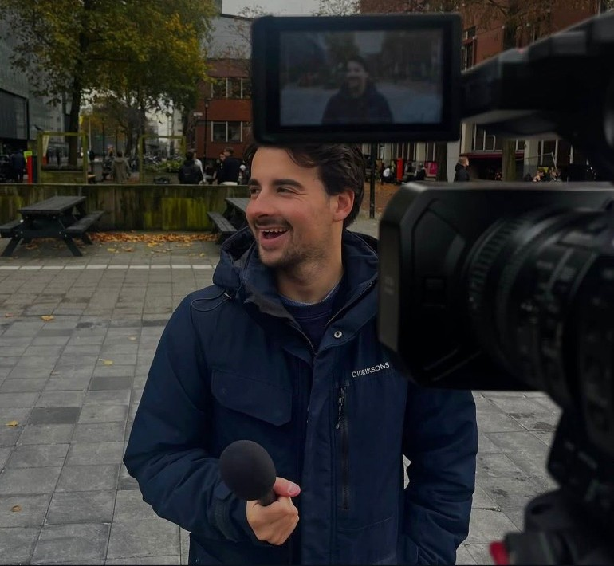
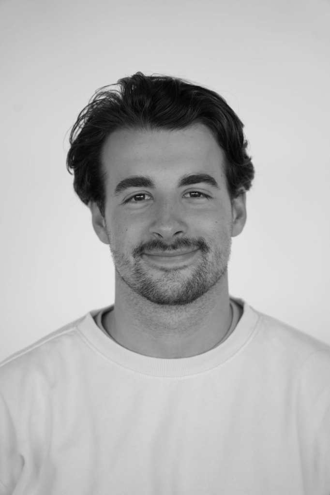

DavidAtWork
Videomaker & Visual Storyteller

David Benjamin
Stam.
Videomaker met een passie voor beeld, sfeer en verhaal. Van bedrijfsvideo’s en promotievideo’s tot evenementen, openingen en bruiloften: "Ik help om momenten, mensen en bedrijven op een sterke en oprechte manier in beeld te brengen."
Creatief, betrokken en helder in communicatie.

Mijn liefde voor video en film begon al vroeg. Als kind wilde ik al regisseur worden, en die passie is later de basis geworden van mijn werk. Daarom ben ik begonnen met een mbo-opleiding in Media- en AV-technologie, waarna ik sinds 2023 ook Journalistiek aan de Hogeschool Utrecht ben gaan studeren.
Door die combinatie van opleidingen heb ik niet alleen oog ontwikkeld voor beeld en techniek, maar ook voor verhaal, inhoud en sfeer. Ik vind het mooi om losse elementen samen te brengen tot één geheel dat klopt.
In de praktijk heb ik ervaring opgedaan bij verschillende bedrijven. Ik liep stage bij Videonieuwsbericht in Hilversum en later bij Talpa Studios, waar ik nog steeds als freelancer actief ben. Ook heb ik gewerkt bij Spot Videoproducties in Haarlem. Met die ervaring wil ik nu steeds meer mijn eigen weg volgen onder mijn eigen naam: DavidAtWork.
Als persoon ben ik vriendelijk, creatief en sociaal. Ik houd van laagdrempelig contact, denk graag mee en werk op een manier die duidelijk en prettig is voor de mensen met wie ik samenwerk.
Bekijk mijn Previews.
Wat ik voor je kan betekenen?
Bedrijfsvideo’s
Video’s die laten zien wie jullie zijn, wat jullie doen en waar jullie voor staan.
Promotievideo’s
Video’s om een bedrijf, merk, opening, product of dienst op een aantrekkelijke manier onder de aandacht te brengen.
Evenementen
Registraties van bijvoorbeeld boekpresentaties, openingen, samenkomsten en andere bijzondere momenten.
Bruiloften
Sfeervolle videobeelden van een belangrijke dag, met aandacht voor emotie, details en beleving.
Mijn aanpak
Ik werk het liefst met echte beelden en echte momenten. Mijn focus ligt op filmen, meedenken en monteren tot een sterk geheel. Ik ben geen grafisch ontwerper, dus mijn werk richt zich niet op video’s met veel gemaakte animaties of zwaar ontworpen beeldlagen. De kracht zit juist in echt beeld, een goede sfeer en een verhaal dat natuurlijk overkomt.
Ik denk actief mee over wat het beste past bij de opdracht. Daarbij vind ik het belangrijk dat er duidelijk gecommuniceerd wordt, zodat vooraf helder is wat er gemaakt wordt en wat je kunt verwachten.
DavidAtWork
- Professioneel, maar toegankelijk
- Vriendelijk en makkelijk in contact
- Creatief en betrokken
- Denkt goed mee over het eindresultaat
- Duidelijk in communicatie
- Flexibel inzetbaar
Ik ben daarnaast goed mobiel en flexibel in waar ik werk. Door mijn auto en studenten-OV ben ik breed inzetbaar voor verschillende opdrachten en locaties.
Geavanceerde
Apparatuur.
Voor opdrachten beschik ik over aanvullende apparatuur om video’s nog sterker te maken.
DJI actioncam
Voor dynamische korte shots op plekken waar een grotere camera minder makkelijk kan komen.
Drone
Voor hoogtebeelden en extra overzicht van locaties, evenementen of buitenopnames.
Zenderset
Voor helder en professioneel geluid, bijvoorbeeld bij interviews of speeches.
Wanneer een opdracht extra apparatuur vraagt, kan dat invloed hebben op de prijs. Dit bespreek ik altijd vooraf.
Duidelijk tarief,
geen verrassingen.
De uiteindelijke prijs hangt af van de opdracht, de duur van de opnames, de montage en het eventuele gebruik van extra apparatuur (bijv. drone, actioncam, zenderset). Eventuele extra kosten door apparatuur bespreek ik altijd vooraf duidelijk, zodat je precies weet waar je aan toe bent.
Klaar om jouw verhaal vast te leggen?
Neem gerust contact op om de mogelijkheden voor een bedrijfsvideo, promotie, evenement of bruiloft te bespreken.
Klik op het adres of nummer om het direct te kopiëren.